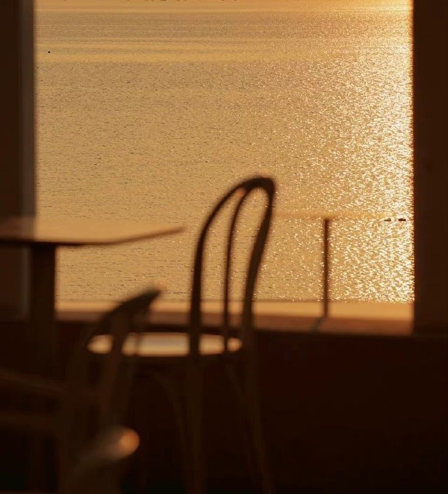

MY PROFILE
Hello, I'm Christie Marie Densing
I am Bachelor of Science in Animation and Multimedia Arts in Northwestern Mindanao State College of Science
and Technology. I am passionate in creating art as well as in film-making. I wish to enhance my skills by becoming
an experienced animator and film-maker.

About Me
Animation and Multimedia Arts Student
Animation and multimedia arts students lead busy lives, balancing demanding
studies with a range of hobbies that
fuel their creativity. Many pursue digital art, constantly honing their skills through personal projects like fan
art or original animations. Traditional art forms like sketching and painting offer a tactile counterpoint to the
digital world, enriching their understanding of visual storytelling. Collaboration is also key; students often join
online communities or participate in projects that foster teamwork and communication. Finally, non-art hobbies like
hiking or playing music provide essential balance and stress relief, ultimately enhancing their creative output. In
short, their hobbies are integral to their artistic development and well-being.
.png)